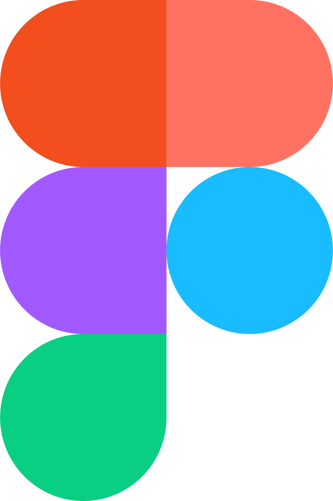
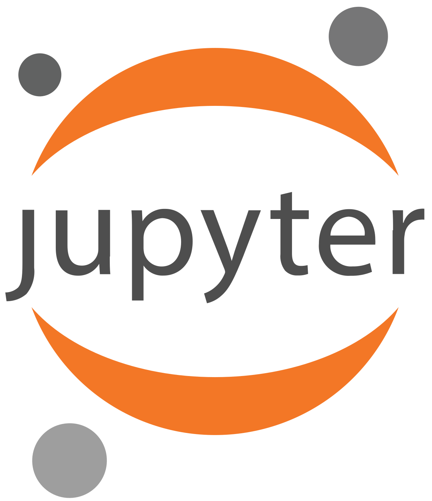
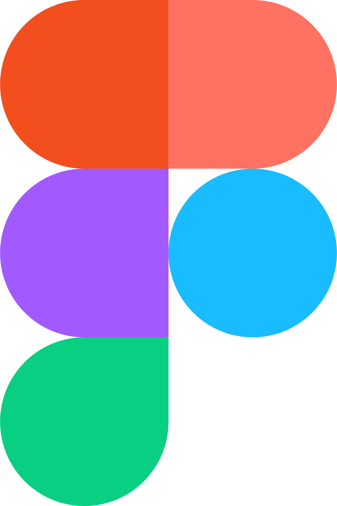
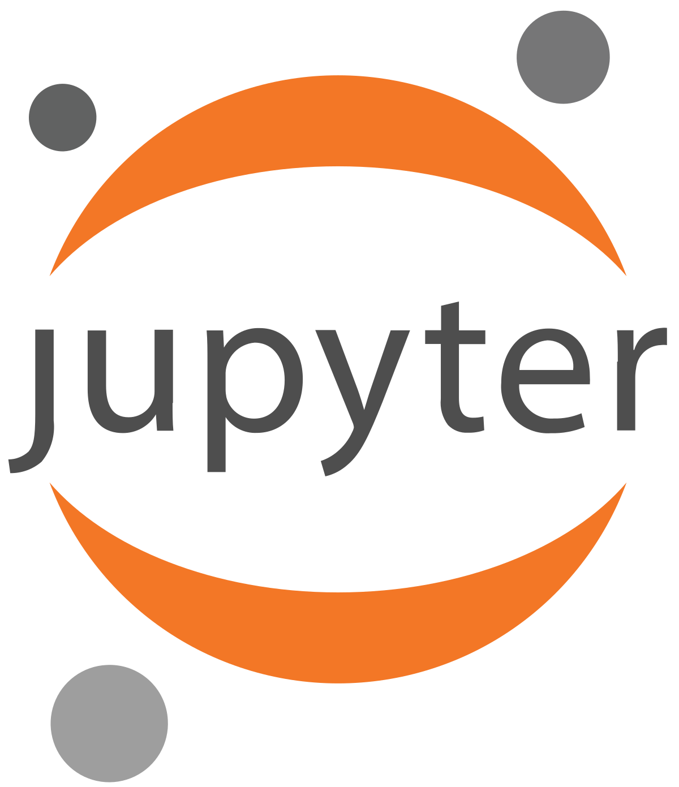
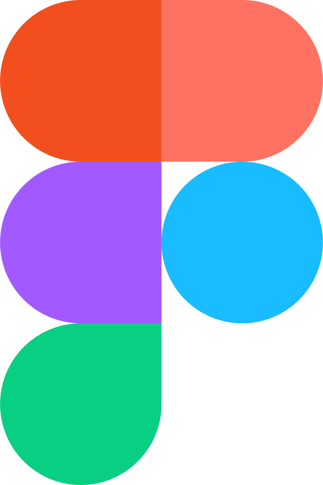
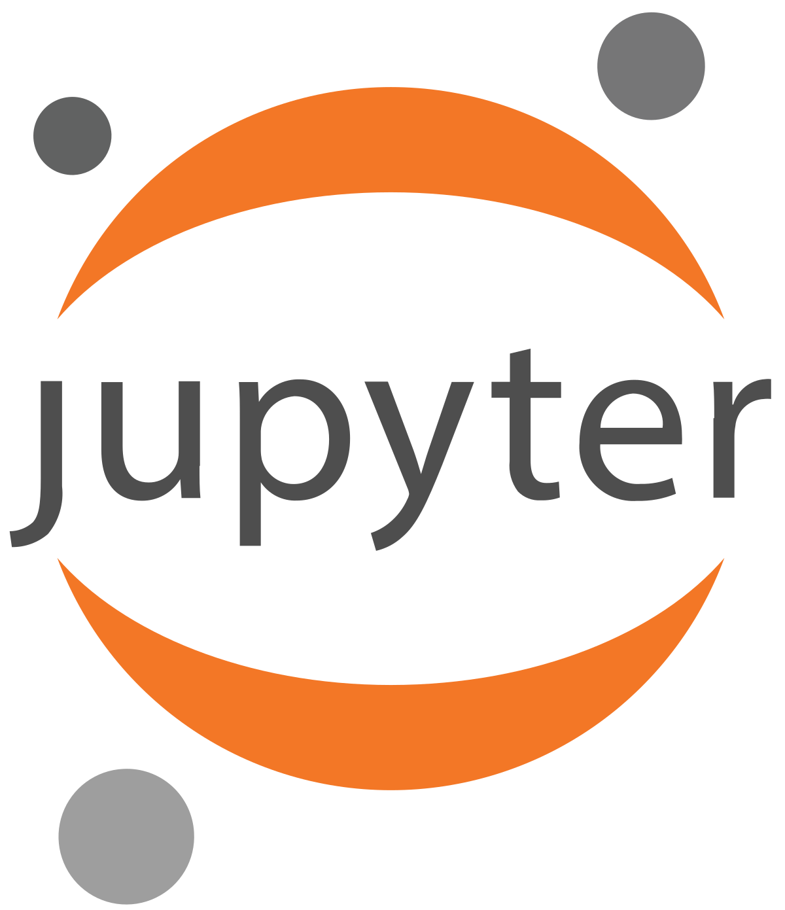
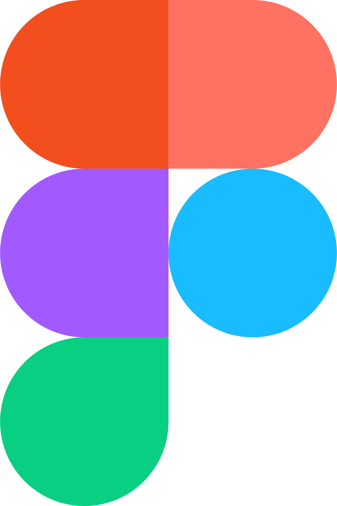
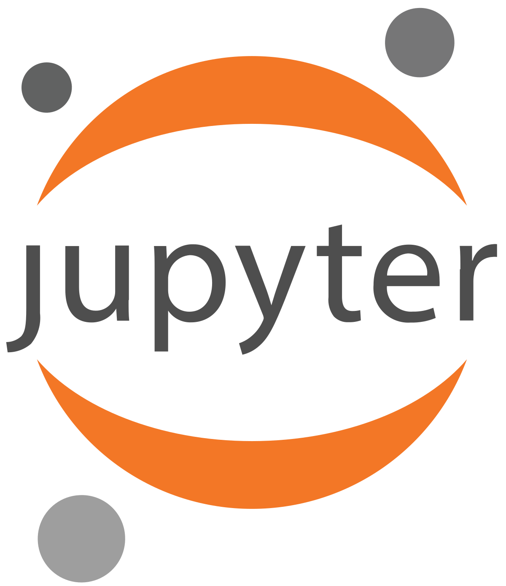

Technologies I Work With


 



 




Integrated ML models with fuzzy logic to enhance safety measures in mining operations.Created predictive systems for hazard detection, improving risk assessment accuracy.Conducted experiments and analysis to validate the effectiveness of the developed models
Technologies Used: Python, Jupyter
A website and mobile application were created to track all visitors, set up appointments, and provide visitor passes for an organisation. Implemented seamless integration with Microsoft services like Azure Active Directory and Microsoft 365.
Technologies Used: PowerApps, Dataverse, Dynamics CRM
A Hotel Management System developed using Java, MySQL, and NetBeans to handle tasks such as guest check-in/check-out, room booking, and billing. The system stores guest information, manages room availability, and generates invoices, improving the efficiency of hotel operations.
Technologies used: Netbeans, Java, MySQL.
Connect with me: